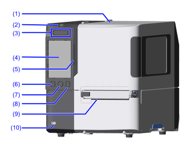
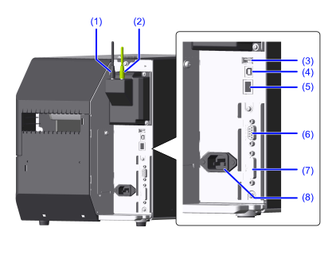

各部の名称
正面

- トップカバー
消耗品の交換時や本製品の清掃時にこのカバーを開きます。 - NFCアンテナ内蔵位置
NFC対応のモバイル端末と通信するときに、モバイル端末をここにかざします。 電源ボタン
本製品の電源を入れるには、ボタンをLEDインジケータが青色に点灯するまで押します。
本製品の電源を切るには、ボタンを2秒以上押し、［電源オフ］をタップしてください。LEDインジケータが赤く点灯したあと消灯し、電源が切れます。
- タッチパネル
本製品の状態やエラーメッセージ、メニュー項目などが表示されます。ディスプレイを指先でタッチして操作します。 - LEDインジケータ
本製品の現在の状態を示します。
オンラインとオフラインを切替えます。 オンライン/オフラインボタン
オンライン/オフラインボタン
ホーム画面に移動します。 ホームボタン
ホームボタン
ホーム画面について詳しくは、ホーム画面の表示と操作を参照してください。フィードボタン
用紙を送ります。- 用紙排出口
印字した用紙が排出されます。 - USBコネクタ（タイプA）
USBメモリやスキャナ、キーボードなどのUSB機器を接続します。
背面

- SIM通信ユニット（オプション）日本
SIM通信を使用するために必要なユニットです。黒色のアンテナを使用します。 - 無線LAN/Bluetoothユニット（オプション）
無線LANとBluetoothを使用するために必要なユニットです。緑色のアンテナを使用します。 - USBコネクタ（タイプA）
USBメモリやスキャナ、キーボードなどのUSB機器を接続します。 - USBコネクタ（タイプB）
USBケーブルを接続します。USBインタフェースで本製品をコンピュータに接続するときに使用します。 - LANコネクタ
LANケーブルを接続します。 - RS-232Cコネクタ（オプション）
RS-232Cケーブルを接続します。RS-232Cシリアルインタフェースで本製品をコンピュータに接続するときに使用します。
また、スキャナも接続できます。
- USBシリアル変換ケーブルを使用した場合の印字については保証していませんので、必ず推奨品のRS-232Cケーブルをお使いください。
- スキャナを接続して使用するには、［印字］ > ［詳細設定］ > ［バーコードチェッカー］ > ［テスト］ > ［通信設定］で［RS-232Cリーダー］に設定を変更する必要があります。
- EXTコネクタ（オプション）
外部信号のインタフェースケーブルを接続します。外部装置と本製品を接続するときに使用します。 - AC電源端子
電源コードを接続します。
- 電源コードを接続する際は、必ずアース線をアース端子に接続してください。アース線を接続しないと感電の原因になります。
内部

- リボン供給軸
リボンをここにセットします。 - リボン巻取り軸
使用済みのリボンを巻き取る部品です。 - 用紙頭出しセンサ
用紙無駄なし機能を有効にしている場合、用紙の先端を検出し、用紙を印字開始位置に合わせます。 - プラテンローラー（消耗部品）
用紙とサーマルヘッドを圧着させて、用紙を送るための部品です。 - ヘッドロックレバー
ヘッドアッセンブリを開くときにこのレバーを倒します。 - ロール紙ホルダー
ロール紙をここにセットします。 - ロール紙ホルダーガイド
ロール紙を固定します。 - ステッカー
モデル名やシリアル番号など、本製品の情報を確認できます。
「S/N」の右側8桁の英数字がシリアル番号です。 - ヘッド圧調整ダイヤル
使用する用紙の厚さや幅に合わせて、サーマルヘッドの圧力バランスを調節します。
詳しくは、ヘッド圧バランスを調節するを参照してください。 - 用紙ガイド
使用する用紙の幅に用紙ガイドの位置を合わせます。 - リボンローラー
リボンを搬送する部品です。 - サーマルヘッド（消耗部品）
用紙に直接またはリボンを使用して印字する部品です。 - 用紙センサガイド
用紙センサの位置調整に使用します。
詳しくは、用紙センサの位置を調整するを参照してください。